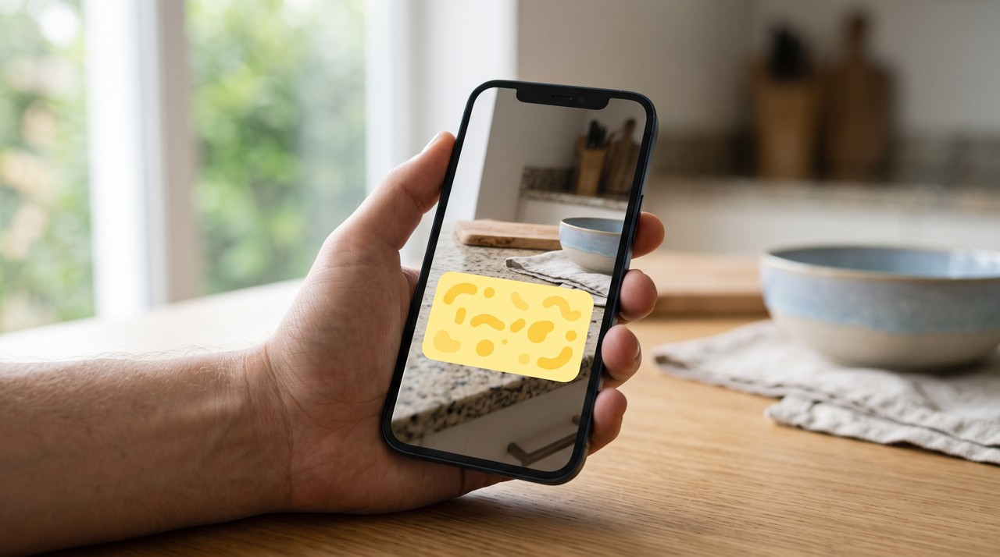

How to turn a YouTube Short into text, including the captions typed onto the video
You might want the text from a YouTube Short. You can get the spoken words if you open it as a normal video by changing /shorts/ in the link to /watch?v= and clicking Show transcript under the description. But many Shorts also have big captions typed onto the picture itself, and the transcript misses those. So you also need pictures of the screen for your AI to read those typed words.
You might watch a Short that explains a useful recipe or a keyboard shortcut in under a minute. You want to save those words to check them later. But a Short plays in a loop without any transcript button. A lot of the information is never spoken out loud, but it flashes on the screen as big text.
Save pictures of the video to keep the words typed on the screen, because a transcript only gets the spoken words. The spoken words live in the caption track, which you can read for free. But the words typed onto the picture are part of the image itself. The only way to keep them is to keep the pictures.
Is there a free way to get the transcript of a YouTube Short?
You can get the transcript on a computer. The Shorts player makes the transcript hard to find, but every Short is actually a normal YouTube video. You take the link that looks like youtube.com/shorts/abc123 and change /shorts/ to /watch?v=. The link will read youtube.com/watch?v=abc123 and open in the normal player.
- Open the Short on a computer and copy the link from the address bar.
- Replace
/shorts/with/watch?v=and press Enter. - Under the video, open the description and click Show transcript.
- Select the lines in the transcript panel and copy them into a note.
YouTube explains this panel in its help page on viewing video transcripts. The page says the transcript is available for any video that has captions. Many spoken Shorts get automatic captions generated by the system. A Short with only music or with captions turned off will not have a Show transcript button.
Why is the text on the screen missing from the transcript?

A lot of Shorts are made in an editing app that puts one or two words right onto the video in big yellow or white letters. This is called burned-in captions. That means the letters became part of the picture itself when the video was saved. YouTube only sees them as pixels, just like a face or a wall, so it cannot read them as text.
This means the transcript and the screen can say different things. The creator might say "use this setting" while the screen shows the exact setting name. They might also play music while five tips appear one after another as text. The transcript gives you the least useful half in both cases.
I work in telecom. Many of the Shorts I save show a person flashing a frequency band or a cable spec on the screen while they talk loosely. The audio on its own tells me almost nothing about the technical details. The numbers I wanted were only ever on the picture.
How do I get the words shown on screen in a Short?
You need to keep pictures of the screen often enough that no caption can appear and vanish between two pictures. Then you let an AI read those pictures. ChatGPT, Claude and Gemini all read text inside images well. The hard part is just getting the right pictures out of the video.
I built a tool called VideoDoc to do this. You paste the Short's link and choose Every frame as images. A 60 second Short gives you 240 pictures at 4 frames a second, and it gives you 60 pictures at 1 frame a second. Burned-in captions change fast, often every half second, so 4 frames a second catches every word.
VideoDoc drops a picture only when it is a 100% exact copy of the one before it. That clears a lot of pictures on a slide video, but a Short is almost always moving. You should expect close to the full 240 pictures. Each picture is named by the exact moment it came from, and a CSV file lists them all, so you can match a caption to its second in the video.
You might want the spoken words and the screen together in one file. You can choose A document for AI instead to do this. VideoDoc uses the Short's own captions when they are available, and it listens to the audio on your own computer when they are not. You get a PDF and a Markdown file with the timestamped words and pictures of the screen.
Which way should I use for my Short?
| What the Short has | Best way | What you get |
|---|---|---|
| Someone talking, no text on the picture | Change the link to /watch?v= and click Show transcript | The spoken words, free |
| Talking plus big captions typed on the picture | A document for AI in VideoDoc | Timestamped words plus pictures of the screen |
| Music only, with tips shown as text | Every frame as images at 4 a second | 240 pictures a minute for your AI to read |
| Your own Short, file still on your phone or PC | Open the file itself, no link needed | The same results, from the file |
Once you have the pictures, you put them in a document your AI can read in one go. I explain that step in turning a folder of images into one document for AI.
VideoDoc does not read the text inside the pictures. It only saves them, and your AI does the actual reading, so you should check anything important against the video. Automatic captions often get names and slang wrong, and only public Shorts work by link. A Short is still the creator's work, so quote it with credit and never repost their words as your own.
Try it on a Short you saved for later.
Try it free in your browser on a file you already have. Pro is one payment for a lifetime licence on 2 machines, and it runs on Windows and Apple Silicon Macs.
Quick questions
Do YouTube Shorts have transcripts?
Many spoken Shorts have automatic captions that give you a transcript. The Shorts player makes it hard to find. You can change /shorts/ to /watch?v= in the link and click Show transcript under the description.
Why does the transcript of a Short miss the text on screen?
The big captions in many Shorts are burned in. This means they are baked into the picture instead of being a separate caption track. YouTube cannot read them as text, so they never appear in the transcript.
How many frames is a 60 second Short?
At 4 frames a second it is 240 pictures, and at 1 frame a second it is 60. Duplicate removal only drops exact copies, so a moving Short keeps close to all of them.
Can I get text from a Short on my phone?
The link trick needs the desktop page, so doing this on a computer is easier. If the Short is your own, you can move the video file from your phone to your computer and open it there directly.
You can try this with your own Watch Later list. Find one Short with big text on the screen and pull both halves of it out tonight.

I am a telecom engineer and business analyst from Pakistan, and I build small honest desktop tools under Designesh. I made VideoDoc because I wanted my AI to read the lectures I study from. Everything here is tested on my own machine first.